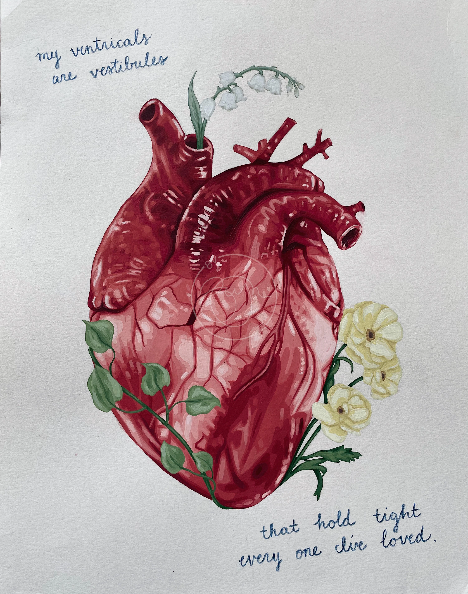
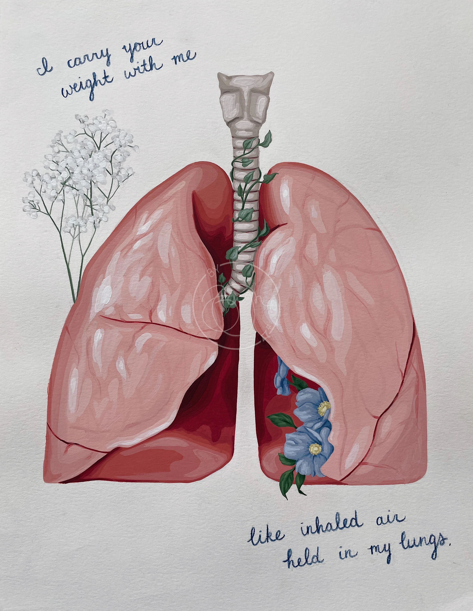

My Heart & My Lungs

“My ventricles are vestibules that hold tight everyone I’ve ever loved. I carry your weight with me like inhaled air held in my lungs.” Brynn Monahan I wrote these lines last summer. It was something that came to me out of the blue, but they kept inexplicably replaying in my mind. I didn’t know where they fit in a song or poem & it didn’t feel right to have them just get lost in a note with so many others. A while later, this concept came to me. It’s not necessarily an original idea, nor is it really an accurate depiction of the lyrics, but it felt authentic nonetheless. I’m glad they have somewhere to live now. Plus, I’ll take any excuse to paint an anatomical heart.
